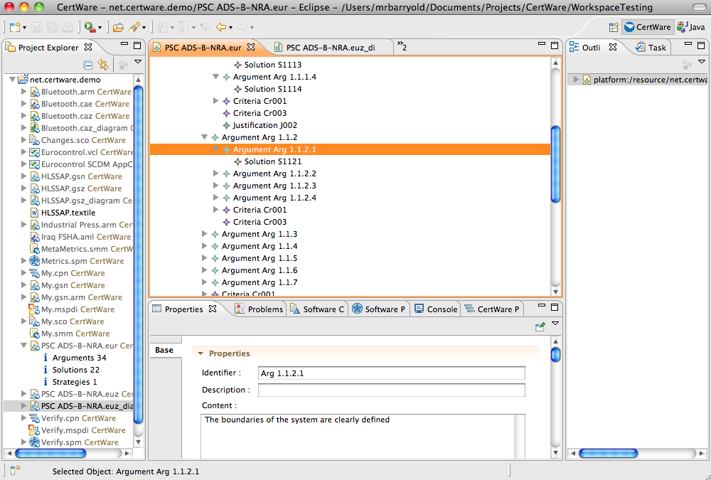

References
- Documents
- EUROCONTROL Safety Case.
- Kelly and Weaver, The Goal Structuring Notation - A Safety Argument Notation.
EUROCONTROL Arguments
The EUROCONTROL safety case development manual specifies an argument notation that is similar to the Goal Structuring Notation (GSN), but differs a bit in model element names. The general structure promoted for EUROCONTROL models is Argument-Solution, where a Claim is supported by the argument, but according to the manual does not appear on graphical models. See the EUROCONTROL safety case development manual (SCDM) linked on the reference page to the left.
CertWare implements EUROCONTROL model editors by building upon the OMG's Argumentation Metamodel (ARM) and according to the example implementation of GSN according to the ARM standard (as of 2010). CertWare provides both text-based structured tree editors and graphical editors in the workbench. Model conversions into other types, to the extent permitted by metamodel semantics, will be provided soon.
The text-based editor is shown in the figure.
The graphical editor is shown in the next figure.